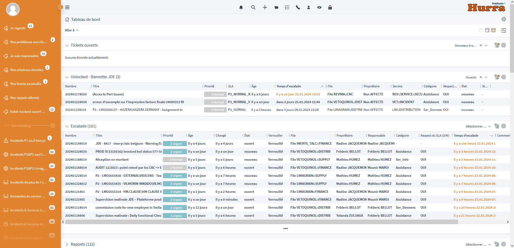
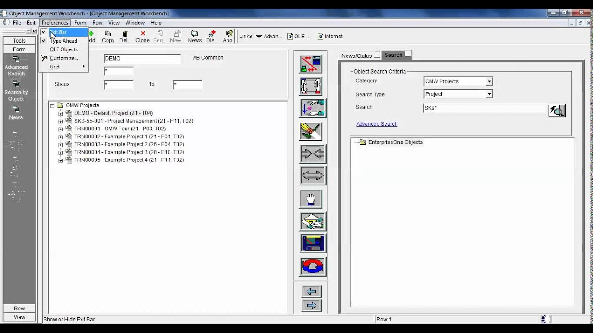
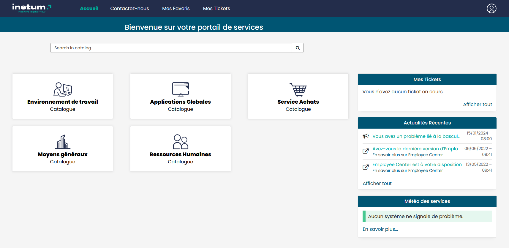
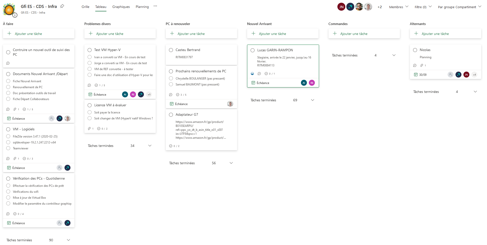

CNC (Configurable Network Computing) et gestion du parc informatique
Dans JD Edwards EnterpriseOne, le Configurable Network Computing (CNC) est une architecture qui permet de gérer et de configurer les environnements informatiques de l'entreprise, notamment les serveurs, les bases de données et les applications, de manière centralisée et flexible. Cela permet aux administrateurs de contrôler efficacement les configurations et les déploiements tout en assurant une gestion optimale des ressources et une intégrité des données.
Dans cette page
Consultant technique CNC
Responsabilités principales :
- Analyse et Suivi des Tickets :
- Recevoir et examiner les tickets clients liés aux déploiments dans les différants environnements de JDE (JD Edwards).
- Déploiement de Packages :
- Gérer le déploiement de packages dans les différents environnements de JD Edwards EnterpriseOne.
- Assurer la mise en œuvre efficace des packages tout en minimisant les risques de perturbation du système.
- Coordination et Communication :
- Collaborer avec les consultants fonctionnels et techniques pour assurer un déploiement efficace.
- Maintenir une communication continue avec les utilisateurs pour comprendre et résoudre les problèmes.
Outils de travail :
- Ticketing : Utilisation de l'outil 'Hurra' pour la gestion des tickets déploiments
 - Outils de déploiement : L’Object Management Workbench (OMW) de JDE
 - Communication : Teams et Outlook pour assurer une communication efficace.
Résultats et Impact :
En remplissant ces responsabilités, j'ai contribué à une gestion plus efficace des déploiements dans les environnements JD Edwards de différants
clients. La coordination étroite avec les équipes concernées et la communication transparente ont permis de minimiser les temps d'arrêt.
Cette expérience m'a permis de développer des compétences essentielles en gestion des déploiements des logiciels et
communication interfonctionnelle.
Gestion du parc informatique
Responsabilités principales :
- Interface avec les Collaborateurs et la DSI :
- Servir de point de contact principal entre les collaborateurs et la Direction des Systèmes d'Information (DSI).
- Assurer une communication fluide et transparente pour répondre aux besoins et aux demandes des utilisateurs.
- Gestion des Tickets et des Incidents :
- Créer, suivre et gérer les tickets relatifs aux demandes et aux incidents des utilisateurs.
- Veiller à ce que les demandes et les incidents soient traités de manière efficace et dans les délais impartis.
- Gestion du Parc Informatique :
- Superviser et gérer le parc informatique de l'agence, y compris les ordinateurs et les logiciels.
- Assurer la maintenance, la mise à jour et la sécurité des équipements informatiques.
- Préparations Matérielles pour les Nouveaux Collaborateurs :
- Coordonner et mettre en place les préparatifs matériels nécessaires pour les nouveaux collaborateurs.
- S'assurer que les nouveaux employés disposent de tout le matériel informatique et des logiciels nécessaires pour commencer leur travail de manière efficace.
Outils de travail :
- Ticketing : Utilisation de l'outil 'Global Help Desk' pour la gestion des tickets
 - Planification : Utilisation de l'outil 'Planner' pour planifier et gérér les tâches
 - Communication : Teams et Outlook pour assurer une communication efficace.
Résultats et Impact :
En remplissant ces responsabilités, j'ai contribué à une meilleure gestion des demandes des utilisateurs, à une augmentation de la productivité grâce à des équipements
informatiques fiables et à une intégration fluide des nouveaux collaborateurs dans l'agence. Ma capacité à assurer une communication efficace entre les différentes
parties prenantes a favorisé une résolution rapide des problèmes et une satisfaction accrue des utilisateurs.
Cette expérience m'a permis de développer des compétences
en gestion des services informatiques, en gestion des actifs et en communication interfonctionnelle.
Compétences acquises :
- Gérer le patrimoine informatique :
- Recenser et identifier les ressources numériques
- Exploiter des référentiels, normes et standards adoptés par le prestataire informatique
- Mettre en place et vérifier les niveaux d’habilitation associés à un service
- Vérifier les conditions de la continuité d’un service informatique
- Gérer des sauvegardes
- Vérifier le respect des règles d’utilisation des ressources numériques
- Répondre aux incidents et aux demandes d’assistance et d’évolution :
- Collecter, suivre et orienter des demandes
- Traiter des demandes concernant les services réseau et système, applicatifs
- Traiter des demandes concernant les applications
- Développer la présence en ligne de l’organisation :
- Participer à la valorisation de l’image de l’organisation sur les médias numériques en tenant compte du cadre juridique et des enjeux économiques
- Participer à l’évolution d’un site Web exploitant les données de l’organisation
- Travailler en mode projet :
- Analyser les objectifs et les modalités d’organisation d’un projet
- Planifier les activités
- Évaluer les indicateurs de suivi d’un projet et analyser les écarts
- Mettre à disposition des utilisateurs un service informatique :
- Réaliser les tests d’intégration et d’acceptation d’un service
- Déployer un service
- Accompagner les utilisateurs dans la mise en place d’un service